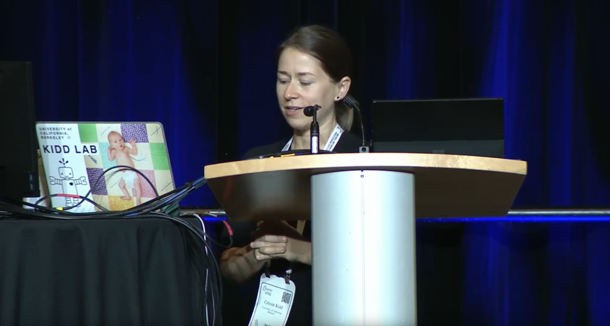
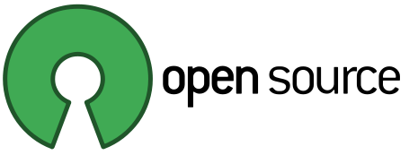
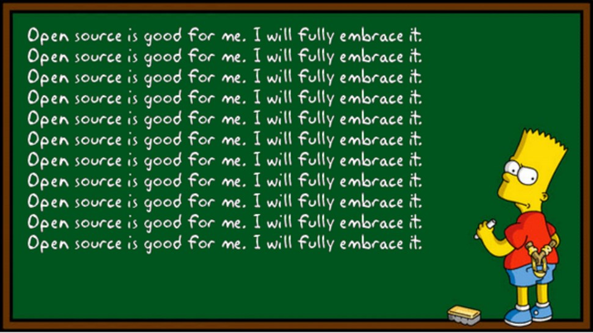
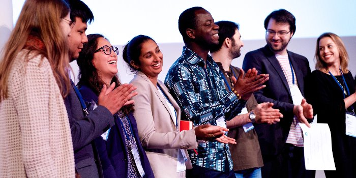

Open Source - CoC - Conflicts
(Since I don’t know individuals’ pronouns, they/them is used in this post instead.)
This post was triggered by three of PyTest maintainers leaving the project in a single day. That’s 3 out of 4-5 active developers of a project which is relied on by a massive part of the ecosystem to test their projects/software/library. So it really is a big deal (obviously not as big of a deal as covid19 which is happening these days ;) ).
The first person to leave was Bruno Oliveira:
Hi everyone,
For the past years I’ve been part of pytest, which is an awesome library and also a community with awesome people. It definitely made me a better person and...
FOSDEM 2020

This was my first FOSDEM, which has been happening in Brussels every year for the past 20 years! It’s kind of a mostly talk based hacker space with no registration required for the attendees. This year the estimate was 5000 attendees each day, and that doesn’t include the fringe events happening around the main event. The fringe itself has tons of events and I managed to attend one or two.
The whole thing has an interesting format; you have the main organization team and then the dev rooms, all handled by volunteers, and with a perfectly functional delegation system. The dev room volunteers have complete control over what happens there, given a few general rules and principles like fire safety and...
How we form beliefs, and implications on our beliefs regarding #metoo

This is a repost of what I posted on twitter.
At NeurIPS @celestekidd gave a keynote on how people form their beliefs. It was amazing, and had two plot twists which made the audience stand and clap at the end; something you don’t see often in academic conferences. Here’s a summary, and I love how it ends.
1/ Humans continuously form beliefs. These beliefs are constantly updated. In a sense, our beliefs are probabilistic expectations which directly influence what we’re interested in.
Things which cause a very low, or a very high surprise level, are usually not interesting to us.
For instance, there’s a low chance that I’d enjoy a book teaching the English alphabet, or a book in a language I don’t understand, and is in an alphabet I don’t know, and...
scikit-learn sprint at Nairobi, Kenya

Almost a year ago, after being the co-speaker of a “My first open source
contribution” talk at PyData Berlin 2018, I myself became very motivated and
started actively contributing to the scikit-learn project. I was surprised to
see how much I could and had to learn to improve my contributions, and that was
after over 20 years of programming experience, 6 years of which I did mostly
Python, and several years of working in the industry. It wasn’t even the first
time I was contributing to an open source project, but it was the first time I
was actively looking for issues to fix.
One of the reasons I stayed on the project, was the extremely nice and patient attitude of the reviewers and core developers of the project, most importantly, Joel Nothman. I felt welcomed, tutored, and guided throughout my contributions. Of course it also required my patience, since some of the...
Ways to contribute to open source projects!

Writing code is not the only way you can contribute to an open source project. Like any other project, there are many tasks which are not programming, but are required to push the project forward, and many programmers are not even necessarily good at those tasks. Think of organizing meetups, UI/UX design, documentation, and translation as some examples. You can read more about these here.
This post is by far not an exhaustive list of what can be done, rather what I have personally been engaged with. Let’s assume you start using a piece of software as a library in of your projects, and through time you want to get engaged with it more.
Please always remember that many of these packages are maintained by volunteers and they’re not...
How to find a good open source project for contributions?
When looking for a project to which you’d like to contribute, there are two major aspects you may want to consider. One is the way it’s released and managed, and the other is the community around it.
The way I see the first aspect, it’s like a spectrum. Closed source proprietary software on one side (let say the right side), and community driven and fully transparent and open sourced project on the other side (let say the left side). And it’s important to realize that different projects are somewhere on this spectrum, and not necessarily on either of the two ends; let aside the whole licensing issue which itself complicates matters by another order of magnitude.
Sometimes companies “release” the source code of a product, or a part of a product. Microsoft does this...
Why would you want to contribute to an open source project?

I’ve been a fan of open source software for a long time. However, up until recently, I wasn’t seriously contributing to any specific project; but why would you want to contribute to an open source project in the first place?
There are a few different aspects to be taken into account here, and here I try to go through some of them.
- Help the community by contributing to the project. This is the one which comes to one’s mind the most. You like a product, or a community around a particular software, hence you contribute to that particular software. Doing so, you help yourself (if you use the software) and everybody else who uses that same product.
- Help the larger community by advocating and normalizing open source contributions. When you contribute to open source projects, you become yet another person...
VectorFight - Winning “Hacking Global Health”

Background
A weekend in October (15-17.10.2017), on the side of the 9th World Health Summit (WHS) I attended a hackathon called Hacking Global Health. We were nearly 40 people, in about 20 teams, and each team had to pitch an idea in 2 minutes. The only constraint on the ideas was that it had to do with improving health in poor urban areas. The trick was that only 8 of these teams were supposed to go to the “next” round and develop those ideas for the final pitch. But that was supposed to happen organically, without any...
A Criticism of “Detecting Sexual Orientation Using Neural Networks”
I’d like to talk about this study: Deep neural networks are more accurate than humans at detecting sexual orientation from facial images, and it’s not going to be a praise of the research!
Damaging Message
I put this study in the same category as studies trying to argue women are different than men, usually in derogatory ways, e.g. proving they’re weaker, less intelligent, or worse at math. Recently we had the google engineer citing a whole bunch of them to support his argument about why men are better coders, or men are better in tech, or whatever bullshit he wanted to argue for. Honestly I won’t bother reading it; I mostly heard about it in podcasts and read about it in the news. My point is, those gender related studies tend to be more damaging than beneficial, and I see no point in doing them. I understand this is a very consequentialist way of assessing the value of...
A Central Cancer Diagnostics Hub
Although the context of this post is bioinformatics and cancer, it applies to many other fields as well. I’ve had this idea for a while, and this an effort to make it more concrete. In this post, a method refers to a computational model or an algorithm, from the preprocessing phase to the final result.
Motivation
The idea is motivated by my experience in bioinformatics, dealing with cancer data and cancer related questions such as cancer diagnostics, while being in a cancer hospital observing some of the struggles oncologists and pathologists face. I’d like to address the following challenges:
- Reproducibility crisis in the field, which I talked about in more detail here
- Reinventing the wheel (over and over again). In science to show the merits of your work, you most probably need to compare it with other methods. Since most...
An Essay on the Reproducibility Crisis
Reproducibility (in science)
It’s almost not a word, to the extent that as far as I know it’s only used in the context of science, and it has its own Wikipedia page. In simple terms, a scientific research’s results are reproducible if you can take its report, follow the instructions, and get the same or similar results.
Reproducibility Crisis
Most research cannot be reproduced, see this video, or articles like this one, this other one, or To me, a hackathon is when a group of people gather for a day or two, working for a somewhat common goal, develop, have fun, meet new people, and to home. Unfortunately for whatever reason, most hackathons have become a competition, with a set prize, organized by some company. The good part is that some attendees might get some money out of the hackathon, but the down side is that it usually becomes a competition and people stop collaborating. I was very happy to see that was not very the case in this hackathon, and we had mostly a really nice atmosphere for the whole weekend. It was a pleasurable experience working and chatting with Clue and WATTx people as well as the attendees. Clue is for people who experience menstruation cycles, or periods, to record their cycle, and related symptoms. These symptoms include bleeding,...
This work was done in Mister Spex GmbH, and slides of a presentation I gave at PyData meetup are available now here. There is a website, in this case an e-shop, and we have information about user sessions on the website. We also have information about TV-ads shown to the public requested by the company. The question is, which of those sessions on the website are there because of the TV-ads. There are some obstacles to answer the above question: I was reading this article on the ethics of editing human genome and I realized there’s a missing point in there. CRISPR in short is a technology that allows us to edit our own genome. Of course it has countless number of useful applications as it’s very simply depicted in the above picture (credit: economist). But recently Chinese scientists have genetically modified human embryos (link). Fortunately...
After quite a few days struggling to configure a Zimbra server so that it automatically fetches users from our freeIPA (LDAP) server, I finally managed to have a configuration which works. I got help from a bunch of pages like this and this one. This comes after you fix the external LDAP authentication and probably also external GAL configuration on your Zimbra server. This is the set of commands I used to set...
I decided to actually write on this blog (decision was made this morning and is final :D ). On June 2nd I received an email from my adviser telling me about the DREAM Challenges. I kind of liked it as some sub-challenges fit exactly what I’ve been doing for that past few months, and that project is already in a phase that we’ve submitted a manuscript about it. So why not? Going through their pages, I realized they’ve got a python client to interact with their databases; that’s cool, but it didn’t support python 3. As a result I made this pull request and at the moment of writing this post, they seem to be interested in accepting the commits (although the changes are not perfect and/or complete and more work is required). Later I was reading...
Clue-WATTx Hackathon
Hackathon
Clue
TV-ad Attribution, Gaussian Processes
Problem description:
On the ethics of CRISPR

Zimbra Auto Provisioning from FreeIPA
zmprov gives you a nice terminal to configure the server:$ su - zimbra
$ zmprov
synapse.org